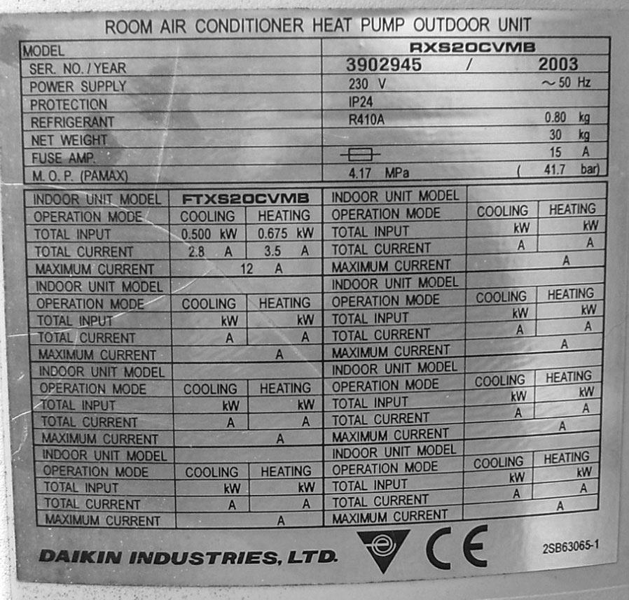
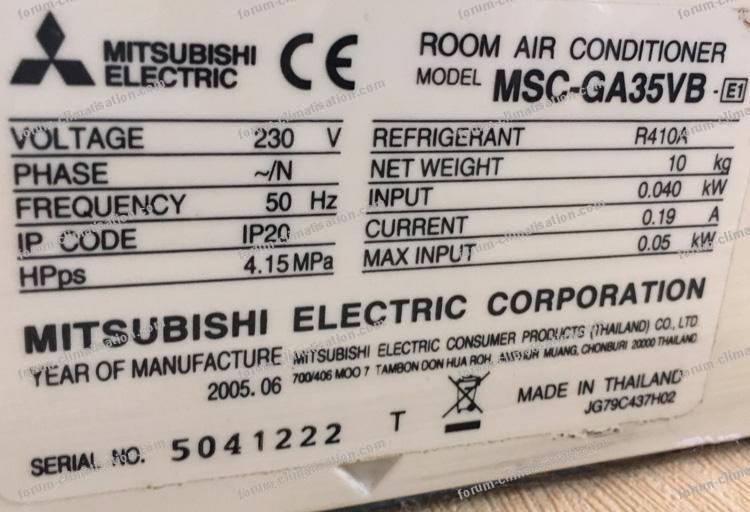

Ordre d'intervention n° OI-S4-1 : le pavillon du chantier est presque prêt pour l'installation du
climatiseur. La liaison frigorifique est brasée et étanche (vous l'avez prouvé en S3-F2), l'éclairage est
posé. Il ne reste plus qu'à préparer la future mise en service de la machine — mais avant cela, un
frigoriste doit savoir LIRE une installation en fonctionnement. La règle que vous allez découvrir
aujourd'hui est la clef de lecture du métier : la pression raconte la température. Vous allez le
CONSTATER vous-même, sur une vraie machine, avant que le cours de théorie (module S4-T1, cette semaine)
ne vous explique pourquoi.
Les manomètres HP (haute pression) et BP (basse pression) : vous les avez déjà
identifiés en S3-T1. Aujourd'hui, vous apprenez à les LIRE.
Ce qui change depuis S3 — En S3, vous avez brasé et prouvé
l'étanchéité d'un réseau cuivre, et vous avez nommé les 13 composants d'une installation réelle, dont
les manomètres HP et BP, sans encore les lire. Aujourd'hui, vous LISEZ pour la première fois ce que
raconte un manomètre, en le comparant à un nouvel outil, la réglette P/T, et à une vraie mesure de
température (le geste de la sonde ne change pas depuis S2-F2, vous le maîtrisez déjà). Vous ne dévissez
rien, vous ne branchez rien : les manomètres sont déjà posés par le professeur — leur pose, vous
l'apprendrez en S7. É2 arrive en semaine 13 : tes objectifs de progrès post-É1 se vérifient
maintenant, dans la rigueur de tes relevés et l'honnêteté de tes notes.
Tâches
T10 Repérer, raccorder, assembler les réseaux fluidiques, aérauliques et électriques T11 Contrôler les circuits hors fonctionnement
Savoirs
S5.1 Systèmes thermodynamiques à détente directe augmenté S5.2 Fluides frigorigènes, huiles frigorifiques nouveau — chaque fluide a SA relation P/T ; on ne manipule aucun fluide, on LIT
Savoir-être
Sécurité machine en marche · rigueur de lecture (manomètre, réglette, sonde) · honnêteté du relevé — je note l'écart même s'il me surprend
Compétence (≤ 4)
ConfortementC4.5 Mesurer, comparer des grandeurs sur T10 · T11 · S5.1 · S5.2
Objectifs — je serai capable de…
lire une pression au manomètre, à chaque station du rallye ;
lire la température correspondante sur la réglette P/T de l'atelier ;
mesurer la température réelle au thermomètre de sonde, comme je sais déjà le faire ;
comparer les trois lectures et noter honnêtement l'écart, à chaque station, même quand il me
surprend ;
m'auto-positionner honnêtement, en tenant compte de mes objectifs de progrès fixés à É1, si je suis
concerné(e).
Prérequis — je sais déjà…
Ce module ne vous apprend pas un nouveau geste de mesure : il vous fait utiliser deux
acquis ensemble, pour la première fois, sur une lecture nouvelle.
mesurer une température au thermomètre de sonde, en sécurité (S2-F2) ;
toucher un organe chaud avec le dos de la main gantée, uniquement en zone autorisée (S2-F2) ;
repérer les 13 composants d'une installation frigorifique réelle, dont les manomètres HP et BP
(S3-T1) ;
la convention de la croix du frigoriste : détendeur à gauche, compresseur à droite, condenseur en
haut, évaporateur en bas.
Si le geste de la sonde ou l'emplacement d'un
manomètre ne vous reviennent plus, ce n'est pas grave : c'est exactement ce que reprend la phase 4 de ce module.
Demandez un rappel au professeur avant de commencer, plutôt que de deviner.
La méthode du jour : le rallye de relevés en stations
Vous allez circuler par petits groupes sur plusieurs stations
installées sur la ou les machines du parc TP (par exemple : BP à l'arrêt, BP en marche, HP en marche, retour à
l'arrêt). À chaque station, vous suivez toujours les 4 mêmes étapes : ① vous lisez la pression au
manomètre ; ② vous lisez la température correspondante sur la réglette P/T ; ③ vous mesurez
la température réelle au thermomètre de sonde ; ④ vous comparez les lectures et vous notez
l'écart. Personne ne vous donne la relation P/T à l'avance : vous la construisez vous-même, station
après station, en observant ce qui se répète.
⚠ La réglette P/T réelle utilisée en atelier, ainsi que le nombre exact de stations et la
ou les machines support du rallye, sont fixés par le professeur au poste — aucune valeur ni aucun schéma de
réglette n'est donné dans ce document : à faire valider.
Matériel (par élève ou par petit groupe, selon l'organisation du poste)
Ce document (TP élève) + crayon de papier, gomme
Tenue de travail complète (chaussures de sécurité, vêtements adaptés)
Une ou plusieurs machines frigorifiques du parc TP en fonctionnement, manomètres déjà posés par le professeur (machine(s) et nombre de stations à confirmer par le professeur)
Gants de protection thermique (fournis, à restituer en fin de séance)
Lunettes de protection (fournies, à restituer en fin de séance)
Réglette P/T de l'atelier (référence de l'atelier, à faire valider par le professeur)
Document ressource fourni : table pression/température (P/T) du fluide de votre banc — voir le kit ressources élève.
Thermomètre à sonde(s), même modèle qu'en S2-F2
Tableau de relevés à colonnes pré-imprimées (ce document, feuilles 3 à 5, + annexe pleine page)
Photos de plaques signalétiques déjà utilisées en S2-F2 (ce document, feuille 5)
Sécurité — machine en fonctionnement (rappel S2-F2, renforcé)
Vous avez déjà observé une machine en fonctionnement en S2-F2 : les règles ne
changent pas, elles s'appliquent sans exception, du début à la fin de la séance. La nouveauté d'aujourd'hui,
ce n'est pas le risque : c'est que les manomètres sont déjà en place sur le circuit, et que vous n'y touchez
jamais autrement qu'en LISANT.
Risque
Parade
Brûlure légère au contact d'un organe chaud (ligne de refoulement, condenseur)
Ne jamais toucher une surface chaude à main nue ni avec la paume. Dos de la main gantée uniquement, et seulement là où le professeur l'autorise (rappel exact du geste de S2-F2).
Ventilateur ou pièce en mouvement (condenseur, évaporateur)
Ne jamais introduire les doigts ni un objet dans un ventilateur en mouvement, même à l'arrêt apparent.
Dévissage ou débranchement accidentel d'un manomètre déjà posé
Ne touchez jamais un manomètre, un raccord ou un flexible : ils sont posés par le professeur, vous les LISEZ seulement, vous ne les manipulez pas.
Circuit sous pression pendant la marche de la machine
Aucune manipulation de vanne, de raccord ou de robinet par l'élève : geste exclusivement professeur, comme en S3-F1.
Démarrage ou arrêt intempestif de la machine
Seul le professeur démarre ou arrête la machine ; il reste présent en continu pendant toute la marche.
Gestes interdits
Jamais toucher, dévisser ou débrancher un manomètre, un raccord ou un flexible — seul le professeur
pose et dépose le matériel ; la pose des manomètres, vous l'apprendrez en S7 ;
Jamais toucher un organe chaud à main nue ou à la paume — dos de la main gantée, en zone autorisée
seulement ;
Jamais introduire les doigts ou un objet dans un ventilateur en mouvement ;
Jamais démarrer ou arrêter la machine soi-même ;
Jamais s'approcher d'une machine en marche sans l'autorisation du professeur ;
Jamais inventer une valeur de relevé — si une lecture est difficile, demandez de l'aide, ne devinez pas.
Avant de commencer, complétez la fiche de sécurité à cocher ci-dessous (EPI
portés, zones autorisées rappelées) et faites-la viser par le professeur.
Fiche de sécurité à cocher — document CAP, F. Henninot.
🚨 En cas d'incident — arrêtez immédiatement, alertez le professeur, ne
déplacez jamais un camarade blessé. En cas de brûlure légère, refroidissez sous le point d'eau pendant
plusieurs minutes puis prévenez le professeur. La trousse de secours et l'arrêt d'urgence sont localisés en
phase 5 de la séance.
JALON 1 — stations « machine à l'arrêt » — ≈ 40 min
La machine est à l'arrêt : c'est le moment le plus sûr pour vous entraîner aux
3 lectures avant de les refaire, plus tard, machine en marche. Suivez toujours les 4 mêmes étapes.
Les 4 étapes du relevé, à répéter à chaque station
① Lire la pression indiquée par l'aiguille du manomètre de la station, en bar ;
② Lire la température correspondante sur la réglette P/T : repérer la colonne du fluide de la
machine, repérer la ligne de la pression lue, lire la température en face ;
③ Mesurer la température réelle au point indiqué, au thermomètre de sonde ;
④ Comparer la température lue sur la réglette et la température mesurée à la sonde, et noter
l'écart, même s'il est grand — un écart n'est pas une erreur, c'est une observation.
Tableau de relevé — jalon 1 (station « BP à l'arrêt »)
Grandeur
Ce que je lis / mesure
Remarque
① Pression lue au manomètre (bar)
② Température lue sur la réglette (°C)
Fluide de la machine : ________________
③ Température mesurée à la sonde (°C)
Point de mesure : ________________
④ Écart entre ② et ③ (°C)
☐ Petit écart ☐ Grand écart
Valeurs propres à la station et à la machine du
poste, à relever réellement — n'inventez jamais une valeur que vous n'avez pas lue ou mesurée vous-même.
Question — La machine est à l'arrêt : à votre avis, pourquoi est-ce le
moment le plus simple pour s'entraîner aux 3 lectures, avant de les refaire machine en marche ?
Indice : pensez à ce qui change (ou pas) sur une
machine arrêtée depuis un moment, comparé à une machine qui vient de démarrer.
Visa professeur — jalon 1
☐ Les 4 étapes ont été suivies dans l'ordre ☐ Lecture de la réglette correcte (bonne colonne, bonne ligne) ☐ Écart noté honnêtement ☐ Autorisé(e) à poursuivre vers le jalon 2
JALON 2 — stations « machine en marche » — ≈ 85 min
Ce qui change par rapport au jalon 1 — Le professeur démarre la
machine et reste présent en continu. Les organes de refoulement et le condenseur deviennent chauds : vous
appliquez le toucher sécurisé de S2-F2 (dos de la main gantée, zones autorisées seulement) uniquement si le
professeur vous y invite — la plupart des lectures se font sans toucher, directement au manomètre, à la
réglette et à la sonde.
Station « BP en marche »
Grandeur
Ce que je lis / mesure
Remarque
① Pression lue au manomètre BP (bar)
② Température lue sur la réglette (°C)
③ Température mesurée à la sonde (°C)
Point de mesure côté aspiration
④ Écart entre ② et ③ (°C)
☐ Petit écart ☐ Grand écart
Station « HP en marche »
Grandeur
Ce que je lis / mesure
Remarque
① Pression lue au manomètre HP (bar)
② Température lue sur la réglette (°C)
③ Température mesurée à la sonde (°C)
Point de mesure côté refoulement — dos de la main gantée si autorisé avant la sonde
④ Écart entre ② et ③ (°C)
☐ Petit écart ☐ Grand écart
Valeurs propres à chaque station, à relever
réellement — n'inventez jamais une valeur.
Question — Comparez la station BP en marche et la station HP en marche.
Laquelle affiche la pression la plus haute ? Et la température la plus haute ? Que remarquez-vous ?
Visa professeur — jalon 2 (stations en marche)
☐ Élève reste à distance de sécurité, ne touche rien sans autorisation ☐ Les 2 stations sont relevées complètement ☐ Écarts notés honnêtement
Station « retour à l'arrêt » — dernière station du rallye
Le professeur arrête la machine. Quelques minutes après, vous relevez à
nouveau la pression, la réglette et la sonde, au même point qu'au jalon 1. Observez comment les valeurs
évoluent après l'arrêt.
Grandeur
Ce que je lis / mesure
Remarque
① Pression lue au manomètre (bar)
② Température lue sur la réglette (°C)
③ Température mesurée à la sonde (°C)
④ Écart entre ② et ③ (°C)
☐ Petit écart ☐ Grand écart
Question de synthèse — Sur les 4 stations du rallye (arrêt, BP en marche, HP
en marche, retour à l'arrêt), qu'avez-vous CONSTATÉ à chaque fois entre la pression lue et la température lue
sur la réglette ? Rédigez une phrase simple avec vos propres mots.
Vous n'avez pas besoin d'expliquer POURQUOI —
c'est le module de théorie S4-T1, cette semaine, qui le fera. Aujourd'hui, vous CONSTATEZ seulement.
Le fluide de VOTRE machine — savoir S5.2 (nouveau)
La réglette P/T que vous venez d'utiliser correspond à un fluide frigorigène.
Mais chaque fluide a sa propre relation P/T : à la même pression, deux fluides différents ne donnent pas
la même température. C'est pour cela qu'on ne lit jamais une réglette au hasard : on lit d'abord, sur la
plaque signalétique de la machine, quel fluide elle contient.
📄 Ressource fournie — table pression/température. Pour lire une température de saturation à partir d'une pression (ou l'inverse), utilisez la réglette P/T multi-fluides ou la table du fluide de votre banc : R134a · R404A · R410A. N'inventez jamais une valeur : lisez-la sur la table.
Information demandée
Valeur selon plaque signalétique de la machine du poste
Marque / constructeur
Modèle / référence
Fluide frigorigène (type)
Si une valeur est absente ou illisible, écrivez
« illisible » — n'inventez jamais une valeur.
Rappel — vous avez déjà lu ces 2 plaques en S2-F2 : elles vous montrent que le
champ « fluide frigorigène » existe sur toute plaque signalétique, et qu'il n'est jamais le même d'une
machine à l'autre.

Daikin — déjà lue en S2-F2.

Mitsubishi Electric — déjà lue en S2-F2.
Question — Ces deux plaques indiquent-elles le même fluide frigorigène ?
D'après ce que vous venez de lire sur la réglette, que se passerait-il si vous utilisiez la réglette de la
machine du poste pour lire la température d'une machine avec un autre fluide ?
☐ 1. Vérifier que le professeur a bien arrêté et sécurisé la machine avant de ranger
☐ 2. Ranger le thermomètre de sonde à sa place
☐ 3. Ranger la réglette P/T à sa place, sans la plier ni l'abîmer
☐ 4. Nettoyer et dégager le poste pour le groupe suivant
☐ 5. Retirer les EPI en dernier, une fois le poste totalement rangé
Jalons franchis
☐ Jalon 1 : stations « machine à l'arrêt » relevées, méthode des 4 étapes maîtrisée
☐ Jalon 2 : stations « machine en marche » (BP, HP) et « retour à l'arrêt » relevées, écarts notés honnêtement
☐ Fluide de la machine du poste identifié sur la plaque signalétique
Visa professeur (fin de séance) : ________________ Heure : ________________
Grille d'évaluation
Échelle FrigorX : 0 Non évalué · 1 Non acquis · 2 En cours
d'acquisition · 3 Acquis · 4 Parfaitement maîtrisé. Statut du jour : C4.5 Confortement (poids réduit, non
remontée sur École Directe dans ce module) — une seule compétence évaluée aujourd'hui.
Compétence / savoir-être
Ancrage
0 Non évalué
1 Non acquis
2 En cours
3 Acquis
4 Maîtrisé
C4.5 Mesurer, comparer des grandeurs
sur T10 · T11 · S5.1 · S5.2
Compétence non observée ce jour.
Ne sait pas lire le manomètre ni la réglette malgré l'aide ; valeurs non relevées ou inventées.
Réalise les 3 lectures avec l'aide du professeur (où regarder sur le cadran, où lire la réglette).
Réalise seul(e) les 4 étapes à chaque station (manomètre, réglette, sonde, écart) et note honnêtement les écarts, même quand ils surprennent.
Comme « Acquis », et formule un constat correct sur le lien entre pression et température observé au fil du rallye.
Savoir-être — sécurité, rigueur, honnêteté
observation continue
Non observé ce jour.
Geste dangereux (touche un organe hors zone autorisée, manipule un manomètre) ou valeur inventée : niveau 1 automatique.
Sécurité globalement respectée, quelques rappels nécessaires.
EPI et gestes respectés sans rappel, valeurs honnêtes, aucune valeur inventée.
Comme « Acquis », et signale spontanément un doute sur une lecture plutôt que de deviner.
Si vous étiez positionné(e) 1 ou 2 à É1 : la
rigueur de vos relevés et l'honnêteté de vos notes d'aujourd'hui font partie de vos objectifs de progrès — ils se
vérifient maintenant.
Documents à remettre
Ce document complété (les 4 stations, dessins, relevés, questions répondues)
Annexe pleine page — tableau de relevés complet (feuille suivante)
Fiche de sécurité à cocher visée par le professeur
Bon de commande hebdomadaire
D'après : documents S2-F2 (F.
Henninot — geste du thermomètre de sonde, toucher sécurisé, photos de plaques signalétiques Daikin et
Mitsubishi Electric) et S3-T1 (F. Henninot — les 13 composants frigorifiques, dont les manomètres HP et BP) ;
Charte pédagogique FrigorX (§7 sécurité) ; référentiel CAP IFCA (codes C4.5, T10, T11, S5.1, S5.2). Réglette P/T
de l'atelier et machine(s) support du rallye : fixées par le professeur, à faire valider — aucune valeur ni
aucun couple pression/température n'est inventé dans ce document.
ANNEXE — Tableau de relevés complet du rallye (une feuille par élève)
Cette page récapitule, en un seul tableau, les 4 étapes de la méthode à chaque
station du rallye. Complétez-la au fur et à mesure de votre parcours — elle sert de trace unique, à conserver
dans votre carnet de bord.
Station
① Pression lue au manomètre (bar)
② Température lue sur la réglette (°C)
③ Température mesurée à la sonde (°C)
④ Écart ② − ③ (°C)
Remarques
BP à l'arrêt
BP en marche
HP en marche
Retour à l'arrêt
Nombre et nature exacts des stations : selon la
ou les machines de l'atelier, fixés par le professeur — cette annexe peut être complétée ou modifiée en séance
si le professeur ajoute ou retire une station.
Ce que je retiens (trace écrite finale)
Écrivez, avec vos propres mots, ce que vous avez constaté aujourd'hui entre pression et température sur une machine réelle.